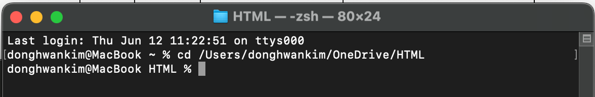
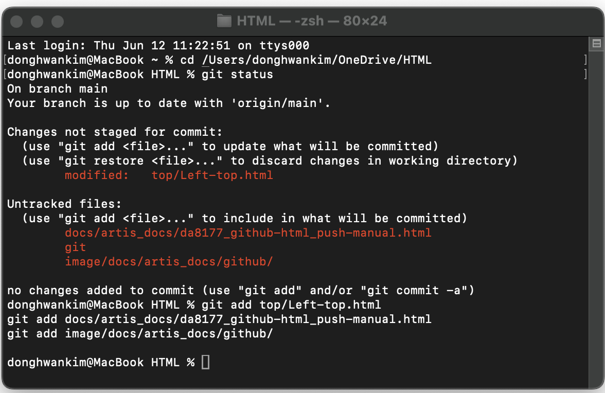
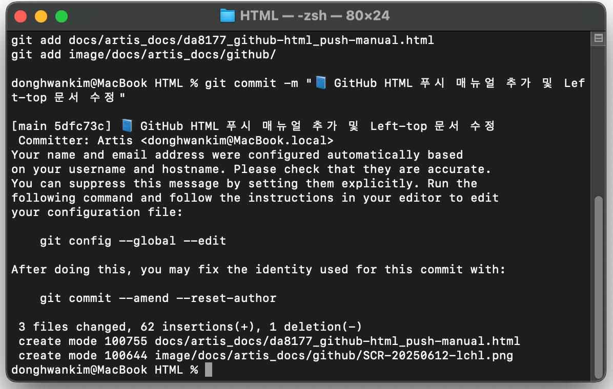
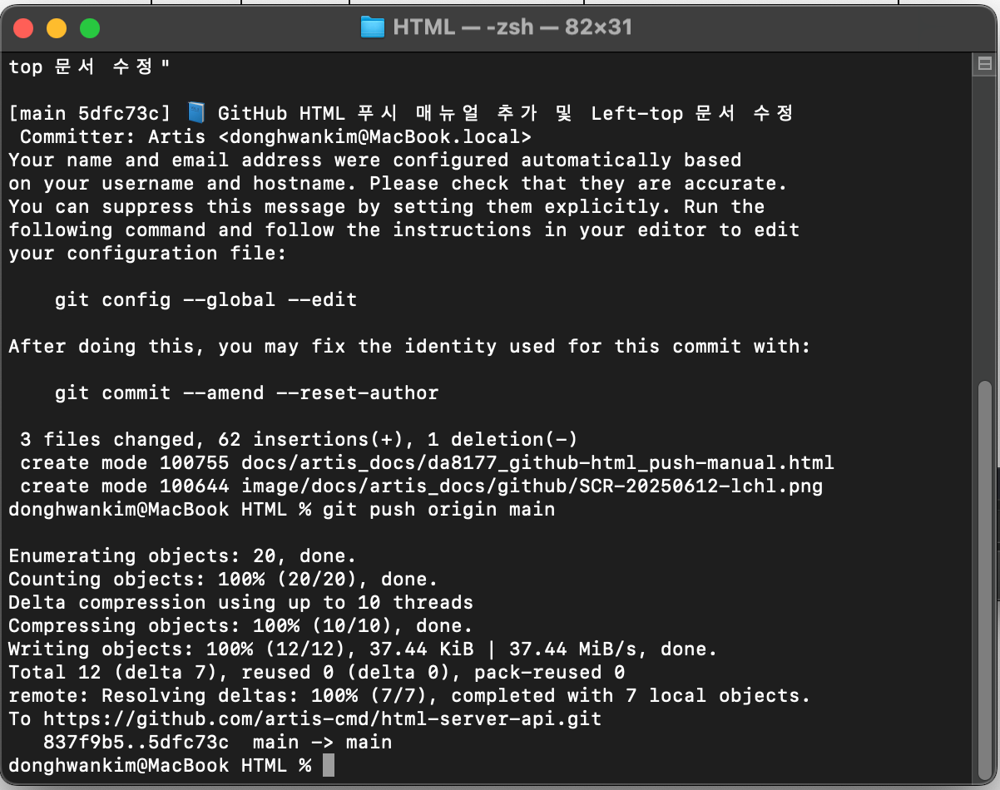

📘 Mac에서 GitHub Pages에 HTML 푸시 매뉴얼
✅ 전제 조건
- Git 설치 (`git --version`)
- GitHub 저장소 생성 및 연결
- 로컬 디렉토리에 Git 초기화 혹은 clone 완료
📁 예시 작업 폴더
/Users/donghwankim/OneDrive/HTML
🔷 Step 1. 작업 디렉토리로 이동
cd /Users/donghwankim/OneDrive/HTML

🔷 Step 2. 변경 사항 확인
git status

🔷 Step 3. 변경 파일 추가
git add .

🔷 Step 4. 커밋
git commit -m "📝 HTML 문서 업데이트: 2025-06-12 02:56:14"

🔷 Step 5. GitHub로 푸시
git push origin main
🔷 Step 6. GitHub Pages에서 확인
https://artis-cmd.github.io/html-server-api/
🧼 캐시 제거
- macOS:
Cmd + Shift + R
- Windows:
Ctrl + Shift + R
🤖 자동화 스크립트 (선택)
#!/bin/zsh
cd /Users/donghwankim/OneDrive/HTML || exit
git add .
git commit -m "📄 HTML 자동 푸시: $(date '+%Y-%m-%d %H:%M:%S')"
git push origin main